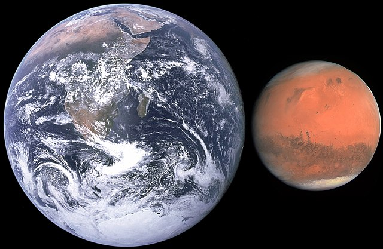

Facts About Mars
Overview
- Mars is the fourth planet from the sun and the last of the inner rocky planets
- One day on Mars lasts roughly 40 minutes longer than here on Earth/li>
- Mars has two moons named Phobos and Deimos
- Mars is also referred to as the Red Planet
Size and Distances
- Mars is the second smallest planet in the Solar System
at 4220 miles or 6791.43 kilometres.
- It is just over a third the size of Earth only slightly bigger than Mercury
- Mars is 142 million miles or 229 kilometres from the Sun
- At its closest to Earth it is 33.9 million miles or 54.6 million kilometres away


Composition
- Mars is a dry and rocky planet with valleys and volcanos
- The red/orange glow from the planet is caused by iron-oxide
- Mars has a dense metallic core surrounded by less dense metallic materials
- There are plenty of materials on Mars that could leave the possiblility to construct
Martian bases
Temperature and Atmosphere
- Mars is quite cold with a average global temperature of -63 degrees celsius
- Its Atmosphere is 95% Carbon Dioxide and less than 1% Oxygen
- Icy winds also can whip up huge sand storms
- Mars could have had a thicker atmosphere with liquid water billions of years ago